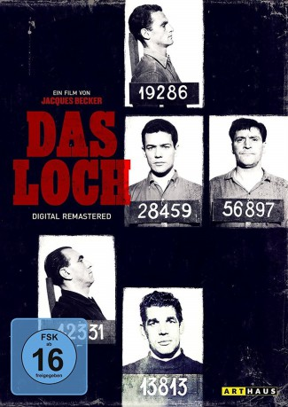

#6717 Das Loch
Alternativ: Le Trou (Englischer Titel)
 
 IMDB-Wertung: 8.5 / 10
IMDB-Wertung: 8.5 / 10  Metascore: 0
Metascore: 0 
Frankreich, 1947: Vier Insassen im Pariser Gefängnis La Santé planen den Ausbruch. Der charmante Volsselin, der Monseigneur genannt wird und immer ein Lächeln auf den Lippen hat, und seine Mithäftlinge Roland Darbant, Geo Cassid und Manu Borelli staunen nicht schlecht, als plötzlich ein neuer Häftling in ihre Zelle verlegt wird. Der junge Claude Gaspard ahnt zunächst nichts von den Ausbruchsplänen, bis ihn seine Zellengenossen schließlich ins Vertrauen ziehen und den Neuling in ihr Vorhaben einweihen. Doch wie so oft läuft nicht ganz alles nach Plan
Jahr: 1960
Dauer: 131 Minuten
FSK: 12
Land: Frankreich Studio: Bavaria-FilmverleihTonspuren:
Untertitel: Deutsch,
Auflösung: 1080p (1808x1080) Größe: 7833 MB
Genre: Thriller, Drama, Krimi
Regisseur: Jacques Becker
Drehbuch: José Giovanni
Soundtrack:
Darsteller:
- Michel Constantin als Jo Cassine
- Jean Keraudy als Roland Darban
 Philippe Leroy als Manu Borelli
Philippe Leroy als Manu Borelli- Marc Michel als Claude Gaspard
- Raymond Meunier als Vossellin / Monseigneur
- Jean-Paul Coquelin als Le lieutenant Grinval
- André Bervil als Le directeur de la prison
- Eddy Rasimi als Bouboule
Datei: X:\1960\Loch, Das (1960, FSK12, 1808x1080).mkv seit 09.08.2017
Festplatte: HD 1900-1970
 Es gibt insgesamt 21 Filme in der Gruppe '1960'
Es gibt insgesamt 21 Filme in der Gruppe '1960'